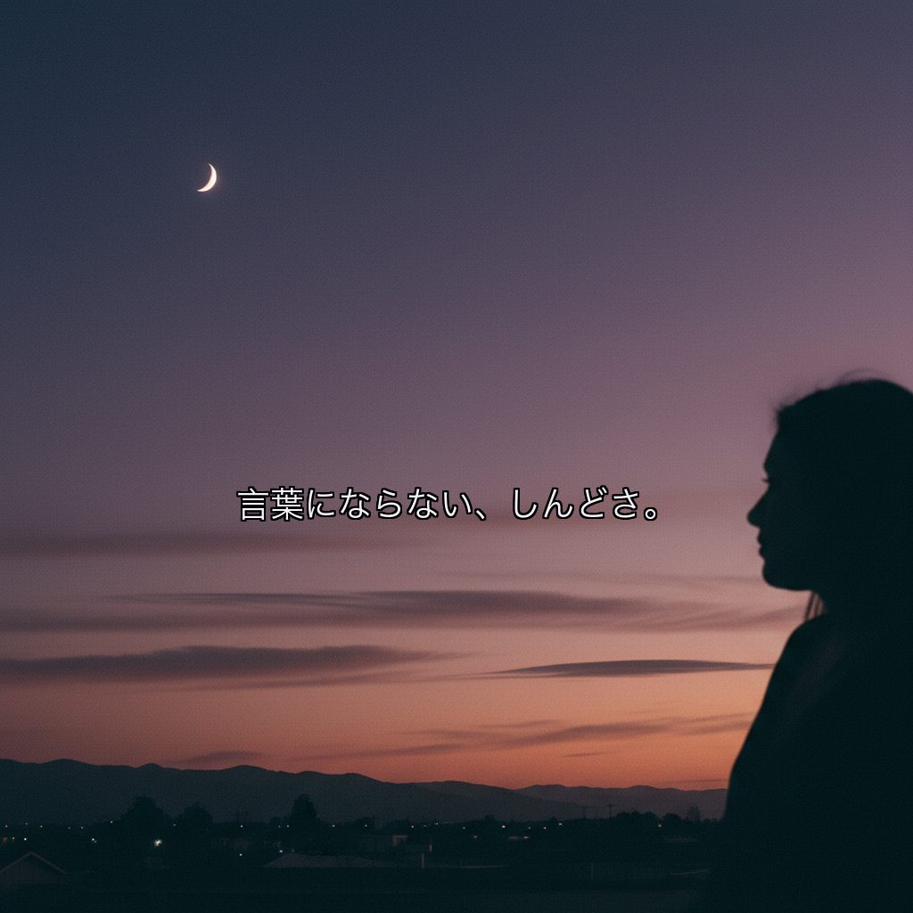

RUNBIRD AI VIDEO — STORYBOARD v5.9.1（参考イメージ枠を撤去・本編構成のみに集約）
仙台オアシスカウンセリングルーム
代表：家山 めぐみ（臨床心理士・公認心理師） ／ 業種：女性専用 心理カウンセリング ／ 動画尺：50秒（YouTube広告）
主役：登場人物統一 子育てママ＝泉里香様風（30代後半）／夫モラハラの妻＝同じ泉里香様風で少し成熟（40代前半）に再生成。両シーン同一人物の連続として読める（家山様5/19返信「登場人物統一」反映）
悩みシーン：① 子育てで頭を抱えるママ ＋ ② 夫モラハラで萎縮する妻（40-50代）の2点だけ（家山様ご指示「5シーンではなく上記2つのシーンだけ」反映）。「誰からも理解されない、孤独」のワードはOPENING②の多行テロップに統合済
テイスト：緑（入り）→ 紫トーンの暗いイメージ（悩み3シーン）→ 光が差して緑に戻る（解決） ／ 実写風（フォトリアル）・静止画・ゆっくり展開
BGM：癒し系（フェリシテHERO 3枚の色味＋リラクゼーション会社の曲のイメージ※曲名／URL要ご共有）
構成：緑のオアシス（無人）→ナレーション開始→紫トーンで悩み3シーン→光→屋号→USP→CTA（5/19補足返信「池袋HPのように緑を先に」反映）
悩みシーン：① 子育てで頭を抱えるママ ＋ ② 夫モラハラで萎縮する妻（40-50代）の2点だけ（家山様ご指示「5シーンではなく上記2つのシーンだけ」反映）。「誰からも理解されない、孤独」のワードはOPENING②の多行テロップに統合済
テイスト：緑（入り）→ 紫トーンの暗いイメージ（悩み3シーン）→ 光が差して緑に戻る（解決） ／ 実写風（フォトリアル）・静止画・ゆっくり展開
BGM：癒し系（フェリシテHERO 3枚の色味＋リラクゼーション会社の曲のイメージ※曲名／URL要ご共有）
構成：緑のオアシス（無人）→ナレーション開始→紫トーンで悩み3シーン→光→屋号→USP→CTA（5/19補足返信「池袋HPのように緑を先に」反映）
女性専用
オンライン全国対応
夜間・土日OK
対面：仙台駅近く
臨床心理士・公認心理師
🟡今回モックで仮置きさせていただいた点
録音・ヒアリングシートに記載がなかったため、業態的に最適と思われる選択で仮置きしています。違うご希望があればご返信内でお知らせください。v5でそのまま反映します。
- ナレーター声：落ち着いた40代女性ナレーション（穏やかな低めの声）
- フックの優先順位：案A（子育てママ）をメインに、案B（夫モラハラ）を差し替え運用候補
- 料金体系の動画内表記：なし（料金は動画外導線で）
- テロップ言語：日本語のみ（英語併記なし）
- 動画末尾の余韻：緑のオアシスの静止画＋LINE/HPロゴ淡出（3秒）
🧠動画構成の根拠（スプシ・録音・5/19返信のクロス参照）
家山様の指示を全て出典付きで反映しています
- 3悩みシーン（子育てママ＋夫モラハラ40-50代＋うずくまり）に集約 ← 5/19補足「他のAI画像は本気度が伝わらない、うずくまりだけでよい」
- 緑のオアシスから始めてナレーション開始 ← 5/19補足「池袋のHPのように緑を先に」
- 悩み3シーンは紫トーンの暗いイメージ ← 5/19補足「そのあと、紫的な暗いイメージで」
- テロップ「誰からも理解されない／孤独」 ← 5/19補足で追加指示
- 夫モラハラの妻は40-50代女性（子育てママと別人物） ← 5/19補足で年齢指定
- 子育てママは泉里香様風 ← 5/19返信。参考写真をAI入力に渡してAIオリジナル顔として生成（特定個人を模倣しない処理）
- コラージュ・絵画療法（箱庭は実施なし） ← スプシ「コラージュ療法など芸術療法」＋ 5/19返信で訂正
- 強みコピー差し替え：「的確なアセスメント」→「専門的な知識に裏打ちされた、丁寧な傾聴」 ← 5/19補足「心理検査未実施なので看板に偽りと言われかねない」
- ターゲット「依存症問題」→「ご家族の依存症でお困りの方」 ← 5/19補足「依存症ご本人は別組織が望ましいケース多」
- CTA前メッセージ「あなたに合ったアプローチで、自律をサポート」 ← 5/19補足で追加
- 代表者の動画出演なし・両者とも肩から下のみ（一対一構図） ← 5/19返信で確定
- 静止画・ゆっくり展開・癒し系BGM ← 5/19返信「鬱な人がみてもうるさくないように」
- 参考イメージ＝フェリシテHPトップHEROの3枚スライドショー ← 5/19補足で確定
- オンラインメインターゲット＋オンラインシーン／CTA：公式LINEとHP ← 5/19返信
🟣悩み2シーン素材（紫トーン）
家山様ご指示「5シーンではなく上記2つのシーンだけでよい」を受け、悩みシーンは下記2点だけにいたしました。「誰からも理解されない、孤独」のワードは OPENING②（s01b）の多行テロップに統合 しています。

① 子育てママ＋泣く4歳児
「何をやってもうまくいかない、もやもや感、しんどさ。」
主役＝30代後半「泉里香様風」AIオリジナル顔（特定個人を模倣しない処理）。

② 夫モラハラ・妻＝同主役（40代前半）
「眉間に皺で説教する夫／萎縮する妻」
家山様5/19返信「登場人物統一」を受け、子育てママと同じ泉里香様風で、少し成熟した40代前半の同一人物として再生成（参考写真2枚をAI入力に渡してSCENE02と顔の連続性を担保）。
📋案件概要
📽シーン構成（全11シーン・50秒 ／ OPENING2＋悩み2＋転換1＋屋号1＋USP3＋自律1＋CTA1）

SCENE 01 ／ 0–4s ／ OPENING①（フェリシテHERO①強寄せ・緑見上げ・中央に光）
もう、一人で悩まないで下さい。（焼込済）
…実は一人で、ずっと、悩みを抱えていませんか。

SCENE 01b ／ 4–7s ／ OPENING②（フェリシテHERO②強寄せ・紫の夜空シルエット・テロップ1行短縮版）
誰からも理解されない、孤独。（焼込済・1行に短縮）
（間）誰からも理解されない、と感じる夜も。
SCENE 02 ／ 6–13s ／ PROBLEM① 子育てママ（紫トーン）
「何をやってもうまくいかない、もやもや感、しんどさ。」
何をやってもうまくいかない、もやもや感、しんどさ。
SCENE 03 ／ 13–19s ／ PROBLEM② 夫モラハラ・妻＝同主役の40代前半（登場人物統一）
「言葉にならない思いを、抱えていませんか。」
夫婦・親子関係の生きづらさ、モラハラ。

SCENE 04 ／ 19–24s ／ AFFINITY（紫→緑へ転換・光が差す）
（間）
（間）あなたの、言葉にならない思いも、受け止めます。

SCENE 05 ／ 24–28s ／ SOLUTION（屋号登場）
仙台オアシスカウンセリングルーム
仙台オアシスカウンセリングルーム。

SCENE 06 ／ 28–37s ／ USP① 専門的な知識に裏打ちされた、丁寧な傾聴
専門的な知識に裏打ちされた、丁寧な傾聴
臨床心理士・公認心理師・精神保健福祉士の資格と経験を持つカウンセラーが、専門的な知識に裏打ちされたご理解で、お気持ちを丁寧にお聴きします。

SCENE 07 ／ 37–41s ／ USP② コラージュ・絵画療法
言葉にならない思いを、形に
言葉になかなかできない時も、コラージュ・絵画療法（芸術療法）も行っております。

SCENE 08 ／ 41–45s ／ USP③ オンラインメイン
オンライン｜夜間・土日対応／全国
オンライン、夜間も土日も。
SCENE 09 ／ 45–48s ／ MESSAGE（自律サポート）★5/19補足で追加
あなたに合ったアプローチで、自律をサポート
あなたに合ったアプローチで、お気持ちや考えが整い、ご自身の力で歩めるよう、お手伝いします。

SCENE 10 ／ 48–50s ／ CTA
まずは、公式LINEへ／HPはこちら
まずはお気軽に、公式LINEからご相談ください。
🎙ナレーション全文（v5.6）
実は一人でずっと、悩みを抱えていませんか。 言葉にならない、しんどさ。誰からも理解されない、孤独。 何をやってもうまくいかない、もやもや感。 夫婦・親子関係の生きづらさ、モラハラ。 —— あなたの、言葉にならない思いも、受け止めます。 仙台オアシスカウンセリングルーム。 臨床心理士・公認心理師・精神保健福祉士の資格と経験を持つカウンセラーが、 専門的な知識に裏打ちされたご理解で、お気持ちを丁寧にお聴きします。 言葉になかなかできない時も、コラージュ・絵画療法（芸術療法）も行っております。 オンライン、夜間も土日も。 あなたに合ったアプローチで、お気持ちや考えが整い、ご自身の力で歩めるよう、お手伝いします。 まずはお気軽に、公式LINEからご相談ください。
※ 約260字 ／ 想定発声 46〜50秒 ／ ナレーター = 落ち着いた40代女性声（仮置き） ／ 動画尺50秒
⚠️演出のキモ ＋ NG・審査対策
◎ 演出のキモ
- HOOK 3秒で「女性／悩み／夜」を一発で伝える
- シーン4で必ず「光が差し込む」転換カットを置く
- カウンセラーの顔は正面で見せすぎず、後ろ姿越し傾聴で感情移入
- 芸術療法は手元クローズアップで「ただ話すだけじゃない」差別化
- CTAは LINE一本に絞る（HP/Mapは小さく添える）
⚠ NG・YouTube広告審査対策
- 「治る」「治療」「改善する」は使わない → 「整える」「向き合う」「寄り添う」
- 疾患名（鬱・パニック・PTSD等）はテロップで断定しない
- 夫役の男性はシルエット／後ろ姿／ピンボケ前景に限定（顔の特定回避）
- アニメ・イラスト調NG（実写風で統一）
- 子供のアップ・泣き顔は避ける（広告審査の児童保護）
✅家山様にご確認いただきたいこと
- ①
妻の年齢A/B確認→ A案で確定（子育てママ＝泉里香様風＋夫モラハラ妻＝別人物の40-50代） - ② 主役の「泉里香様風」の度合い — AIオリジナル顔（特定個人を模倣しない処理）で生成しました。もう少し寄せる／離す方向はございますか
- ③ 夫のシーンの見せ方 — 眉間に皺で説教する3/4ビューにしました。シルエットに弱める方が良いか
- ④ SCENE 07 一対一構図 — 来談者＋カウンセラーの両者とも顔は枠外。室内の実写写真（5/18佐久間に送付済）を受領後、合成精度を上げます
- ⑤ 公式LINE QRコード／HP URL（CTA画面に貼る用）
- ⑥ ナレーター候補は落ち着いた40代女性声で仮置き。性別・年齢の希望はございますか
- ⑦ BGM「リラクゼーション会社の曲のイメージ」の曲名／URL — 5/19返信でご言及いただいた、昨日お見せしたリラクゼーション会社の曲を、曲名または該当ページURLでご共有ください
- ⑧ コラージュ作品のサンプル写真ご提供時期（来談者持参とのことで作例があれば）
- ⑨ 対人援助職向けコンサルテーションを動画に含めるか／別動画化するか
- ⑩ 料金体系の動画内テロップ表記 — 仮置きでは動画内に料金表記なしにしています